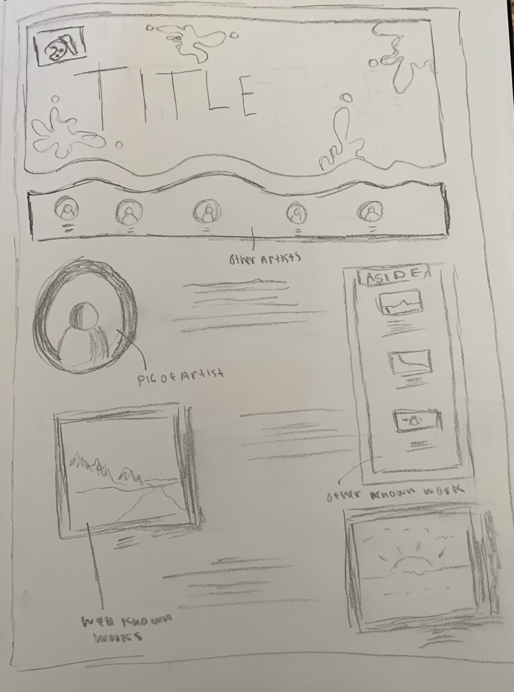
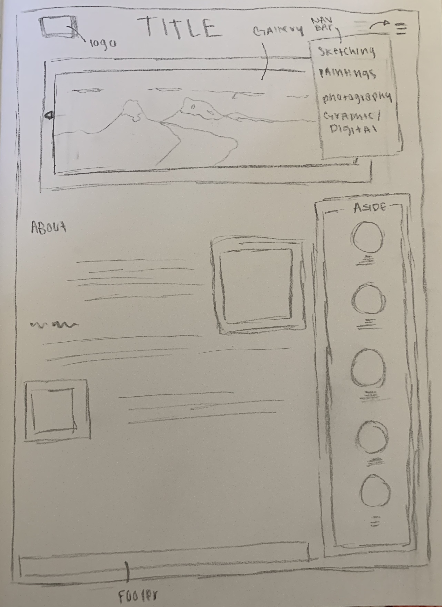

Challenge
In this Lab, I were to work individually and create a series of final sketches of how the website will lok like. I have gotten my team to give me feedback which helped my understanding of what it will look like.
In this Lab, I were to work individually and create a series of final sketches of how the website will lok like. I have gotten my team to give me feedback which helped my understanding of what it will look like.
The difficulties I had were that all my sketches were almost the same so not much feedback was given. I will say my team really enjoyed how my layouts look. This is the reason why I only had two sketches.
I would say that I am pretty satisfied with the final sketches that I made. I wanted to add as much as possible so that it can look cool but also we can have a challenge. Since this is an art website, I wanted to add things that we can do such as a logo or header.
Feedback: The feedback that I recieved is that my team really liked my layouts for the website, the addition to a logo, and having an aside of the artists that we chose so that it can be easy for people to click around.
 